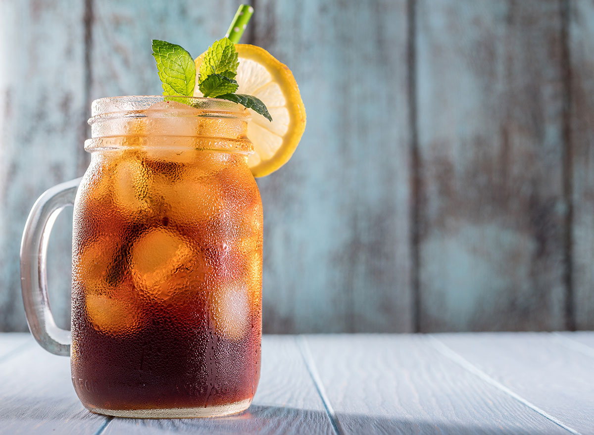

Ice Tea

Description
This is the ice tea that I almost sometimes make. I wanted to practice making list pages one more time so I'm really reaching
with this one but we shall see what I can come up with.
Who doesn't like ice tea though right? Oh damn I forgot the flavour. Well get ready for the best miscellaneous
flavour ice tea you can imagine.
Ingredients
- 500g of whatever fruits you want to use
- 100ml lemon juice
- 100g of white sugar
- 150g of brown sugar
- 5 bags of Rooibos tea (I DON'T CARE WHAT ANYBODY ELSE SAYS - THIS IS THE BEST ICE TEA BASE)
- 1L of water
- Fridge
Steps
- Remove most of the skin from your fruits if the skin isn't super edible
- Boil water and steep teabags in it for 30 minutes
- Remove the tea bags and add the sugars and mix
- Reheat the water to a medium high temperature
- Mince the fruit and add to the water, mixing vigorously
- Re-add the tea bags
- Cover with plastic
- Leave to steep for 24 hours in room temperature
- Strain, throw in some ice cubes and drink